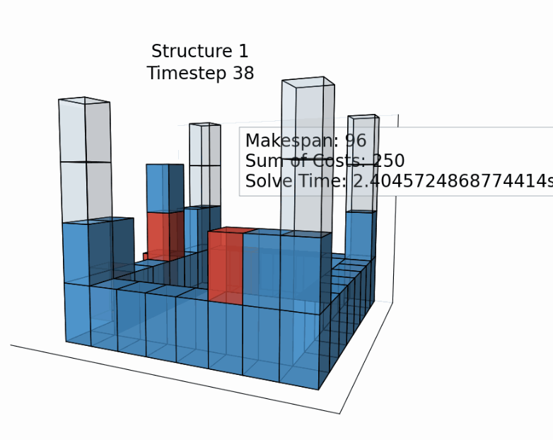

Multi-robot construction planning.
Using expert demonstrations to study how teams of robots can coordinate construction tasks.

01 / 07- Institution
- Carnegie Mellon University
ARCS Lab - Timeline
- January 2026 – present
- Focus
- Imitation learning
Multi-agent planning
Overview
Collective construction asks multiple robots to coordinate actions toward a shared structure. This research explores learning-based planning for those collaborative tasks in a simulated multi-agent environment.
I developed a baseline imitation learning pipeline and generated expert demonstration datasets with a hierarchical multi-agent collective construction planner.
What I worked on
- Built a baseline imitation learning pipeline for collective construction tasks.
- Produced expert demonstration datasets using a hierarchical multi-agent planner.
- Evaluated learning-based planning approaches for collaborative robot tasks.
Research in progress
The project is ongoing. The current portfolio summary covers the baseline pipeline, dataset generation, and evaluation direction documented in my résumé.
Case study details
Placeholder: add more simulation frames, a diagram of the planner and learning pipeline, evaluation metrics, and a fuller discussion of findings.